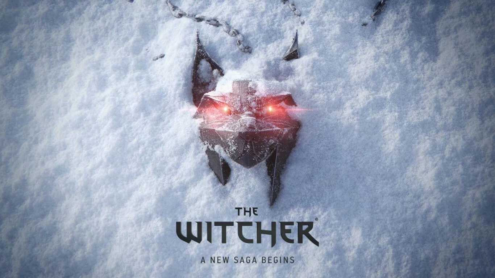

Análisis de Resident Evil 4: Separate Ways, un broche dorado para un remake imprescindible
La aventura paralela de Ada Wong llega a Resident Evil 4 Remake, y la espera ha valido la pena. Llamado Caminos Distintos desde los menús del propio juego, Separate Ways aborda los acontecimientos de Resident Evil 4 experimentados a través de un personaje distinto, con sus propios métodos y con una misión secreta entre manos muy, muy diferente a la de Leon Kennedy. Una infiltrada en la sombra que, por circunstancias, también se ve atravesando esa España oscura y rural mientras sortea los peligros de un extraño culto.
Leer más
Jugamos a 'Assassin's Creed Mirage': Una sigilosa vuelta a los orígenes
Es todo un regreso a las raíces de la saga. Un homenaje al título que lo inició todo, con un enfoque más táctico y de sigilo. Sin embargo, se queda corto con su legado.
Leer más

The Witcher 4: todo lo que sabemos hasta ahora del inicio de una nueva era para Geralt de Rivia a cargo del estudio CD Projekt RED
En palabras de CD Projekt RED, dará pie al inicio de una nueva era para la saga del brujo Geralt de Rivia, así que vamos a repasar todo lo que sabemos hasta ahora del proyecto mientras vamos actualizando con cada detalle que salga a la luz.
Leer más